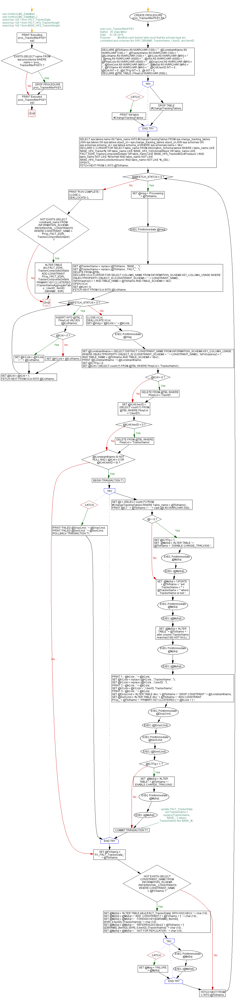

<a href="proc_TrackerAlterPKEY.png"></a>
-- use KenticoCMS_DataMart -- use KenticoCMS_DataMart_2 -- select top 100 * from FACT_TrackerData -- select top 100 * from FACT_HFit_TrackerWeight -- select top 100 * from BASE_HFit_TrackerWeight GO PRINT 'Executing proc_TrackerAlterPKEY.sql'; GO IF EXISTS (SELECT name FROM sys.procedures WHERE name = 'proc_TrackerAlterPKEY') BEGIN DROP PROCEDURE proc_TrackerAlterPKEY; END; GO -- exec proc_TrackerAlterPKEY CREATE PROCEDURE proc_TrackerAlterPKEY AS BEGIN /* Author: W. Dale Miller Date: 01.08.2016 Purpose: Modifies each tracker table such that the primary keys are consistent and comprise the SVR, DBNAME, TrackerName, UserID, and ItemID */ DECLARE @TblName AS NVARCHAR (100) = '' , @ConstraintName AS NVARCHAR (100) = '' , @TrackerName AS NVARCHAR (100) = '' , @ColName AS NVARCHAR (100) = '' , @KCols AS NVARCHAR (MAX) = '' , @msg AS NVARCHAR (4000) = '' , @cmd AS NVARCHAR (4000) = '' , @PkeyCols AS NVARCHAR (4000) = '' , @DropCmd AS NVARCHAR (MAX) = '' , @GenCmd AS NVARCHAR (MAX) = '' , @MySql AS NVARCHAR (MAX) = '' , @FKName AS NVARCHAR (MAX) = '' , @iCntUserID INT = 0 , @iCnt INT = 0 , @iCTFlg INT = 0 , @i INT = 0; DECLARE @TBL TABLE ( PkeyCol NVARCHAR (500) ); BEGIN TRY DROP TABLE #ChangeTrackingTables; END TRY BEGIN CATCH PRINT 'Init table #ChangeTrackingTables '; END CATCH; SELECT sys.tables.name AS Table_name INTO #ChangeTrackingTables FROM sys.change_tracking_tables JOIN sys.tables ON sys.tables.object_id = sys.change_tracking_tables.object_id JOIN sys.schemas ON sys.schemas.schema_id = sys.tables.schema_id WHERE sys.schemas.name = 'dbo'; DECLARE C CURSOR FOR SELECT table_name FROM information_Schema.tables WHERE ( table_name LIKE 'BASE_HFit_Tracker%' OR table_name LIKE 'BASE_HFit_ToDoSmallSteps' OR table_name LIKE 'FACT_EDW_TrackerCompositeDetails' OR table_name LIKE 'BASE_HFit_TrackerBloodPressure' ) AND table_name NOT LIKE '%VerHist' AND table_name NOT LIKE 'BASE_HFit_TrackerCollectionSource' AND table_name NOT LIKE '%_DEL'; OPEN C; FETCH NEXT FROM C INTO @TblName; WHILE @@FETCH_STATUS = 0 BEGIN SET @msg = 'Processing: ' + @TblName; EXEC PrintImmediate @msg; SET @TrackerName = replace (@TblName , 'BASE_' , '') ; SET @TrackerName = replace (@TblName , 'FACT_' , '') ; DELETE FROM @TBL; DECLARE KCol CURSOR FOR SELECT COLUMN_NAME FROM INFORMATION_SCHEMA.KEY_COLUMN_USAGE WHERE OBJECTPROPERTY (OBJECT_ID (CONSTRAINT_SCHEMA + '.' + CONSTRAINT_NAME) , 'IsPrimaryKey') = 1 AND TABLE_NAME = @TblName AND TABLE_SCHEMA = 'dbo'; OPEN KCol; SET @iCnt = 0; FETCH NEXT FROM KCol INTO @ColName; WHILE @@FETCH_STATUS = 0 BEGIN INSERT INTO @TBL ( PkeyCol) VALUES (@ColName) ; IF @iCnt > 0 BEGIN SET @KCols = @KCols + ',' + @ColName; END; ELSE BEGIN SET @KCols = @ColName; END; SET @iCnt = @iCnt + 1; FETCH NEXT FROM KCol INTO @ColName; END; CLOSE KCol; DEALLOCATE KCol; SET @msg = '@kCols = ' + @kCols; EXEC PrintImmediate @msg; SET @ConstraintName = (SELECT DISTINCT CONSTRAINT_NAME FROM INFORMATION_SCHEMA.KEY_COLUMN_USAGE WHERE OBJECTPROPERTY (OBJECT_ID (CONSTRAINT_SCHEMA + '.' + CONSTRAINT_NAME) , 'IsPrimaryKey') = 1 AND TABLE_NAME = @TblName AND TABLE_SCHEMA = 'dbo') ; PRINT '@ConstraintName: ' + @ConstraintName; SET @iCTFlg = 0; SET @iCnt = (SELECT count (*) FROM @TBL WHERE PkeyCol = 'TrackerName') ; IF @iCnt = 0 BEGIN DELETE FROM @TBL WHERE PkeyCol = 'UserID'; END; SET @iCntUserID = (SELECT count (*) FROM @TBL WHERE PkeyCol = 'UserID') ; IF @iCntUserID = 0 BEGIN DELETE FROM @TBL WHERE PkeyCol = 'TrackerName'; END; IF @ConstraintName IS NOT NULL AND ( @iCnt = 0 OR @iCntUserID = 0) BEGIN BEGIN TRANSACTION T1; BEGIN TRY SET @i = (SELECT count (*) FROM #ChangeTrackingTables WHERE Table_name = @TblName) ; PRINT '@CT: ' + @TblName + ' : ' + cast (@i AS NVARCHAR (50)) ; IF @i > 0 BEGIN SET @iCTFlg = 1; SET @MySql = 'ALTER TABLE ' + @TblName + ' DISABLE CHANGE_TRACKING '; EXEC PrintImmediate @MySql; EXEC (@MySql) ; END; SET @MySql = 'UPDATE ' + @TblName + ' set TrackerName = ''' + @TrackerName + ''' where TrackerName is null '; EXEC PrintImmediate @MySql; EXEC (@MySql) ; SET @MySql = 'ALTER TABLE ' + @TblName + ' alter column TrackerName nvarchar(100) NOT NULL '; EXEC PrintImmediate @MySql; EXEC (@MySql) ; PRINT '1 - @kCols : ' + @kCols; SET @KCols = replace (@KCols , ',TrackerName' , '') ; SET @KCols = replace (@KCols , ',UserID' , '') ; PRINT '2 - @kCols : ' + @kCols; SET @KCols = @KCols + ', UserID, TrackerName'; PRINT '3 - @kCols : ' + @kCols; SET @DropCmd = 'ALTER TABLE dbo.' + @TblName + ' DROP CONSTRAINT ' + @ConstraintName; SET @GenCmd = 'ALTER TABLE dbo.' + @TblName + ' ADD CONSTRAINT PKey_' + @TblName + ' PRIMARY KEY CLUSTERED (' + @kCols + ') '; EXEC PrintImmediate @DropCmd; EXEC (@DropCmd) ; EXEC PrintImmediate @GenCmd; EXEC (@GenCmd) ; IF @iCTFlg = 1 BEGIN SET @MySql = 'ALTER TABLE ' + @TblName + ' ENABLE CHANGE_TRACKING '; EXEC PrintImmediate @MySql; EXEC (@MySql) ; END; --update FACT_TrackerData set TrackerName = replace(TrackerName, 'BASE_','') where TrackerName like 'BASE_%' COMMIT TRANSACTION T1; END TRY BEGIN CATCH PRINT 'FAILED @DropCmd: ' + @DropCmd; PRINT 'FAILED @GenCmd: ' + @GenCmd; ROLLBACK TRANSACTION T1; END CATCH; END; SET @FKName = 'FK_FACT_TrackerData_' + @TblName; IF NOT EXISTS (SELECT CONSTRAINT_NAME FROM INFORMATION_SCHEMA.REFERENTIAL_CONSTRAINTS WHERE CONSTRAINT_NAME = @FKName) BEGIN SET @MySql = 'ALTER TABLE [dbo].[FACT_TrackerData] WITH NOCHECK ' + char (10) ; SET @MySql = @MySql + ' ADD CONSTRAINT [' + @FKName + '] ' + char (10) ; SET @MySql = @MySql + ' FOREIGN KEY([DBNAME], [ItemID], [SVR], [UserID], [TrackerName]) ' + char (10) ; SET @MySql = @MySql + ' REFERENCES [dbo].[' + @TblName + '] ([DBNAME], [ItemID], [SVR], [UserID], [TrackerName]) ' + char (10) ; SET @MySql = @MySql + ' NOT FOR REPLICATION ' + char (10) ; BEGIN TRY EXEC PrintImmediate @MySql; EXEC (@MySql) ; END TRY BEGIN CATCH SET @Msg = 'FAILURE: ' + @MySql; END CATCH; END; FETCH NEXT FROM C INTO @TblName; END; PRINT 'RUN COMPLETE.'; CLOSE C; DEALLOCATE C; IF NOT EXISTS (SELECT constraint_name FROM INFORMATION_SCHEMA.REFERENTIAL_CONSTRAINTS WHERE CONSTRAINT_NAME = 'PKey_FACT_EDW_TrackerCompositeDetails') BEGIN ALTER TABLE dbo.FACT_EDW_TrackerCompositeDetails ADD CONSTRAINT PKey_FACT_EDW_TrackerCompositeDetails PRIMARY KEY CLUSTERED (TrackerNameAggregateTable , UserID , ItemID , DBNAME , SVR) END; END; GO PRINT 'Executed proc_TrackerAlterPKEY.sql'; GO
Hide code
Visustin flow chart for T-SQL